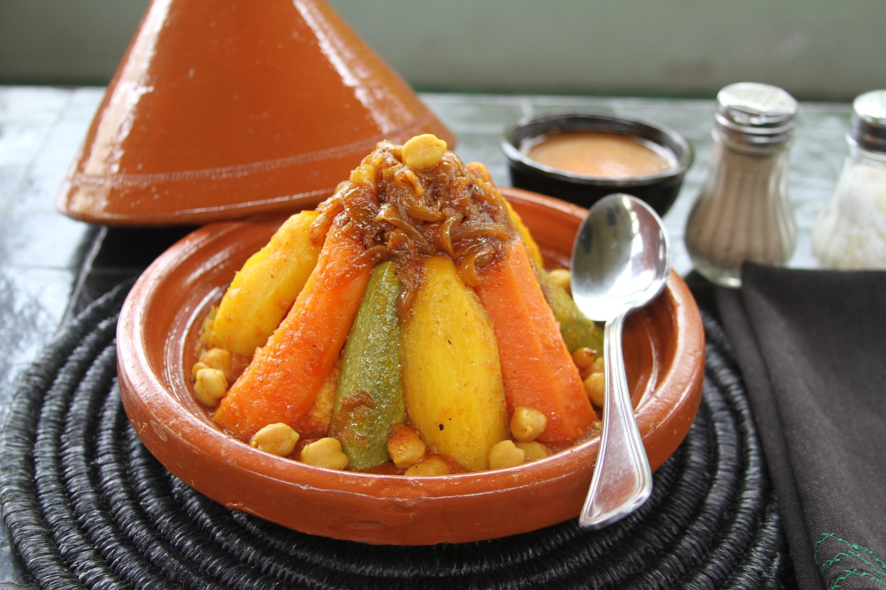

This Moroccan slow cooker dish is the perfect blend of sweetness and spice.
Step 1
Heat olive oil in a skillet over medium-high heat. Place the chicken pieces and eggplant in the heated oil; stir and cook until the chicken is browned on all sides but not cooked through. Remove the skillet from the heat.Step 2
Place the browned chicken and eggplant on the bottom of a slow cooker. Layer the onion, carrots, dried cranberries, and apricots over the chicken.Step 3
Whisk together the chicken broth, tomato paste, lemon juice, flour, garlic salt, cumin, ginger, cinnamon, and ground black pepper in a bowl. Pour the broth mixture into the slow cooker with the chicken and vegetables.Step 4
Cook on High setting for 5 hours, or on Low setting for 8 hours.Step 5
Bring water to boil in a saucepan. Stir in couscous, and remove from heat. Cover, and let stand about 5 minutes, until liquid has been absorbed. Fluff with a fork.